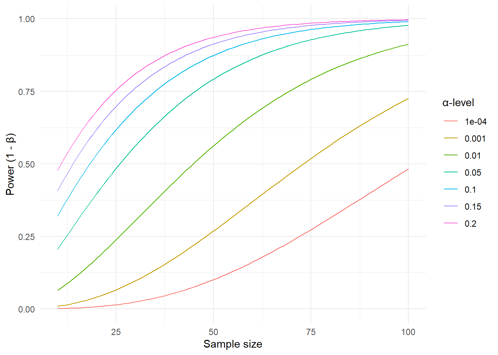

15 Hypothesis tests and statistical power
In frequentist statistics, as developed by Neyman and Pearson (Spiegelhalter 2019, 282–82), we use two hypotheses to plan our studies. The null hypothesis is the one we use for our hypothesis test. The alternative hypothesis is used to estimate the sample size needed to detect a meaningful effect. As we are designing a test about the null hypothesis, we can ultimately make two mistakes. First, we could end up rejecting the null hypothesis even though it is true. If, for example, we compare two groups and obtain a result from our study sample that rejects the null hypothesis even though there is no difference between the groups at the population level, we commit a Type I error. If, instead, there is a true difference between groups at the population level, but our test fails to reject the null hypothesis, we make a Type II error.
Spiegelhalter, D. J. 2019. The Art of Statistics : How to Learn from Data. Book. First US edition. Basic Books.
In previous chapters, we used the t-test to perform statistical hypothesis tests; we will use it to further explore power analysis.
15.1 Defining the alternative hypothesis
According to the Neyman-Pearson approach to statistical testing, we should plan our studies with two known (long-run) error rates. First, we should specify the percentage of repeated studies that would reject the null hypothesis if it were actually true. This error rate is denoted by \(\alpha\). Second, we should specify a rate at which we are willing to miss rejecting the null hypothesis, or fail to find evidence for an effect of a certain size, if this alternative hypothesis actually exists in the population. This error rate, denoted \(\beta\), is often expressed as \(1-\beta\), which is the statistical power of a test (or study design). If we want a power of 90% ($ 1- beta$), we state that if the effect exists in the population, we will detect it with our test in 90% of studies, given repeated sampling.
When designing a study, we want to balance the two types of errors. We are therefore interested in the number of participants (or replicates) required to achieve certain error rates. The power of a test, defined as the long-run chance of “detecting” a true alternative hypothesis, depends on the size of the effect in the alternative hypothesis, the number of participants in the study, and the \(\alpha\) level. In the figure below (Figure 15.1), we have plotted power values as a function of the sample size, given a fixed effect size of 0.4 (see below) and different values of the \(\alpha\) error rate ranging from 0.001 to 20%.
This means that if there is a true effect in the population, we will be more likely to reject the null hypothesis if we increase the sample size, or increase the rate at which we would reject the null hypothesis if it were actually true (the \(\alpha\)-level)
15.2 The size of the effect
Above, we used a fixed standardized effect size of 0.4 to obtain power values. In the case of comparing two groups, an appropriate standardized effect size (ES) is the ratio of a meaningful difference (MD) to the estimated population standard deviation (SD)
\[ES = \frac{MD}{SD}\] Finding a meaningful difference is the tricky part in power calculations. In a clinical setting, this could mean a treatment-induced difference that leads to a perceived beneficial effect for an individual. Because the outcome of a study could be a reduced pain score or a lower blood pressure reading, the study design needs to address which difference is important.
In elite sports, an improvement in an athlete’s performance of 0.3-0.4 times the within-athlete performance variability was considered important as it would increase the chance of winning a competition from 38 to 48% for a top athlete (Hopkins et al. 1999).
Hopkins, W. G., J. A. Hawley, and L. M. Burke. 1999. “Design and Analysis of Research on Sport Performance Enhancement.” Journal Article. Med Sci Sports Exerc 31 (3): 472–85. https://doi.org/10.1097/00005768-199903000-00018.
15.3 Power and study designs
In healthy Norwegian women aged 30-39 years, the average VO2max has been estimated at 40 with a standard deviation of 6.8 (Loe et al. 2013). From the age of 30, VO2max decreases by about 3 ml kg-1 min-1 per every ten years. Let’s say that we want to design a study to investigate the effect of a new training method. We might then think that an improvement in VO2max corresponding to a five-year decline (half of the average ten-year decline) would be important to detect. We compare two training methods in two parallel groups. One group trains with the traditional method, the other with a new method. We plan to measure VO2max in both groups, after the intervention. The null hypothesis says that the groups are not different after the intervention. The alternative hypothesis states that the new method leads to a difference between training methods of at least 1.5 ml kg-1 min-1 between groups. We will accept an \(\alpha\) error rate of 5% and \(\beta\) error rate of 20% as we aim for an 80% chance of detecting a true effect (of at least 1.5 ml kg-1 min-1), if it is actually true.
We now have all the numbers we need for a sample size estimation. In R, the pwr package provides functions for calculating sample size, power, and effect sizes for commonly used statistical tests. The effect-size (\(d\)) can be calculated as the smallest effect of interest divided by the population standard deviation \(d = \frac{1.5}{6.8} = 0.22\). We can input our numbers in the function pwr.t.test.
library(pwr)
pwr.t.test(d = 1.5/6.8, sig.level = 0.05, power = 0.8)
Two-sample t test power calculation
n = 323.5688
d = 0.2205882
sig.level = 0.05
power = 0.8
alternative = two.sided
NOTE: n is number in *each* groupFrom the output we can see that we need more than 324 participants in each group to get a power of 80% given a significance-level (\(\alpha\)) of 5%. This is a BIG study!
However, a study’s power is also influenced by its design. In the example above, we used a single post-intervention test to determine the sample size. This is an inefficient design as we need more participants to account for the uncertainty in the sampling process. If we instead rephrase the question to focus on the change in VO2max between groups and measure each participant before and after the intervention, we are designing a more efficient study; fewer participants are needed to achieve the same power. We can estimate the approximate standard deviation of the change score (difference between pre- and post-treatment measurements) by combining the expected SDs of the pre- and post-treatment scores and their correlation (Higgins et al. 2019). We get these numbers from previous studies (Loe et al. 2013; Astorino et al. 2013).
Higgins, Julian PT, Tianjing Li, and Jonathan J Deeks. 2019. “Choosing Effect Measures and Computing Estimates of Effect.” Book Section to Cochrane Handbook for Systematic Reviews of Interventions. https://doi.org/https://doi.org/10.1002/9781119536604.ch6.
Loe, H., Ø Rognmo, B. Saltin, and U. Wisløff. 2013. “Aerobic Capacity Reference Data in 3816 Healthy Men and Women 20-90 Years.” Journal Article. PLoS One 8 (5): e64319. https://doi.org/10.1371/journal.pone.0064319.
Astorino, T. A., M. M. Schubert, E. Palumbo, et al. 2013. “Magnitude and Time Course of Changes in Maximal Oxygen Uptake in Response to Distinct Regimens of Chronic Interval Training in Sedentary Women.” Journal Article. Eur J Appl Physiol 113 (9): 2361–69. https://doi.org/10.1007/s00421-013-2672-1.
We are still interested in a difference between groups of 1.5 ml kg-1 min-1, i.e. the alternative hypothesis is that the two training methods we are examining will differ 1.5 ml kg-1 min-1 in their average responses. The SD of the change score is determined to be 4.7, the resulting standardized effect size is therefore about 0.32. Given the same power and significance level we get the resulting sample size estimate:
library(pwr)
pwr.t.test(d = 1.5/4.7, sig.level = 0.05, power = 0.8)
Two-sample t test power calculation
n = 155.083
d = 0.3191489
sig.level = 0.05
power = 0.8
alternative = two.sided
NOTE: n is number in *each* groupA change in the design of the study resulted in a sample size less than half of the more inefficient study.
NotePower analysis in Jasp
In the Power module we can insert relevant information to estimate sample sizes in many different study designs and statistical tests.